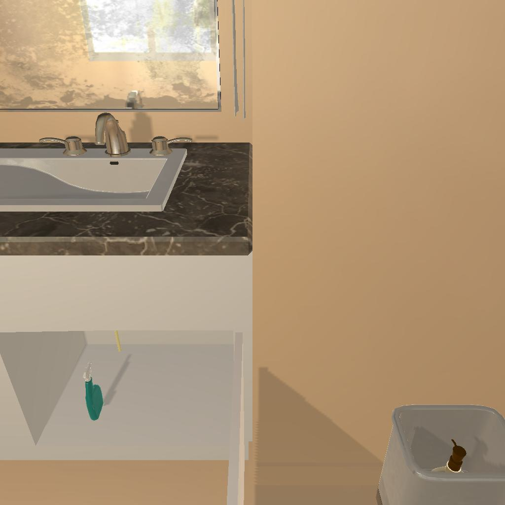

---------------------------------------------------------task: 11---------------------------------------------------------
--------------------------------------------------------------------------------------------------------------------------------------------------------------------
--------------------------------------------------------------------------------------------------------------------------------------------------------------------
Step:--------------------------------------------------------------------------11-------------------------------------------------------------------------------
----------------------------------------
VLM Prompt:
Image1:
Image2:
Image3:
**Instruction**
1. Analyze the provided images to identify all visible household objects and compare the difference between images (e.h. whether the object is opened or not and taken on hand or not), focusing on those relevant to the task description "put a clean soapbar in bathtubbasin."
2. Use the analysis of images and the task hint "The agent must find an object of the desired type, pick it up, go to a sink or a basin, clean the object with a sink or basin, and then find the correct location to place it and put it down there. The agent does not need to use soap bottle or faucet to clean the object, and the agent just needs to do action that is "clean the object with the sink or sink basin"." to answer the question: what is the most reasonable action in the choices for the task description "put a clean soapbar in bathtubbasin"?
3. Decide and write the answer using the template: The answer is: (i): , where i is the real number. If there is no desired object in images, search every place based on **Initial Observation** to find the object. And if no one is exactly correct, choose a similar answer.
**Initial Observation**
You are in the middle of a room. Looking quickly around you, you can see bathtub (1), bathtubbasin (1), toilet (1), cabinet (1-2), countertop (1), sink (1), sinkbasin (1), garbagecan (1)
**Answer Choices**
(1): go to bathtub 1
(2): go to bathtubbasin 1
(3): go to toilet 1
(4): go to cabinet 1
(5): go to countertop 1
(6): go to sink 1
(7): go to sinkbasin 1
(8): go to garbagecan 1
(9): close cabinet 2
(10): take faucet 2 from cabinet 2
(11): take spraybottle 2 from cabinet 2
(12): take handtowel 1 from cabinet 2
(13): take soapbottle 1 from cabinet 2
(14): take candle 2 from cabinet 2
(15): examine cabinet 2
**Answer**
Let's think step by step by following the instructions.
----------------------------------------
----------------------------------------
Original Response:
First, we analyze the images provided:
Image 1: We can see a bathroom setting with a toilet, a sink with a faucet, a countertop, and a cabinet. On the countertop, there is a spray bottle, and on the floor beside the toilet, there is a roll of toilet paper. The cabinet appears to be closed.
Image 2: The view is similar to Image 1, but the spray bottle has fallen from the countertop to the floor, and the cabinet is open, revealing a faucet, a spray bottle, a hand towel, a soap bottle, and a candle inside.
Image 3: The image is almost identical to Image 2, with no noticeable changes.
Next, we use the analysis of images and the task hint to answer the question: what is the most reasonable action for the task description "put a clean soapbar in bathtubbasin"?
According to the task description, we need to find a soapbar, clean it, and then put it in the bathtub basin. However, upon examining the images, there is no soapbar visible in any of the images or on the list of items inside the cabinet. Therefore, we must search every place based on the Initial Observation to find the object.
Considering the options provided, the most reasonable action is to go to the place where a soapbar is most likely to be found. Commonly, a soapbar could be located near the sink area or inside the cabinet. Since we have already seen inside the cabinet and no soapbar is visible, the next logical step is to check near the sink or sink basin.
The answer is: (7): go to sinkbasin 1.
----------------------------------------
----------------------------------------
>>> Refine Original VLM Response and Get Pure Action: go to sinkbasin 1
----------------------------------------
-----------------------------------------------------------------
Running time: 15.3806791305542 seconds
Total Money: 5.927590000000006
-----------------------------------------------------------------
-----------------------------------------------------------------
Text Observation:You arrive at loc 6. On the sinkbasin 1, you see a faucet 1, and a faucet 2.
-----------------------------------------------------------------
UNSUCCEED